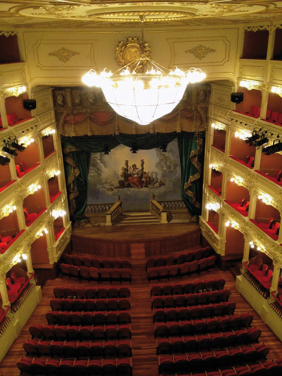
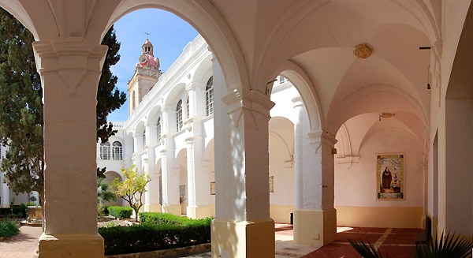

Minorque, une culture riche
Minorque ne se résume pas à ses plages et au soleil. L’île a été pendant des siècles un bouillon de cultures et de civilisations, donnant forme à une mosaïque qu’avec le temps la Minorque actuelle a affiné, une île avec une grande richesse culturelle, beaucoup plus de ce qui en paraît.
Les premiers habitants de l’île ont laissé leur empreinte. Le patrimoine archéologique minorquin est incroyable. Navetas, talayots ou taules sont présents dans de nombreux recoins de l’île. Ils nous rappellent comment tout a commencé. Visitez un de ces sites archéologique et imaginez-vous la vie des siècles en arrière.
Siècle après siècle, Minorque a grandi culturellement. Anglais, Français, Espagnols…Leurs présences a donné à l’Île cet air multiculturel qu’elle conserve et entretient encore aujourd’hui. Minorque compte de nombreux enchantements culturels. Vous ne pouvez rater sous aucun prétexte la visite du Musée de Minorque (Maó) ou bien le Musée Municipal de Ciutadella. Vous aurez aussi l’occasion de découvrir le passé de l’île au Musée Militaire d’Es Castell ou bien en visitant le Fort Malborough ou l’impressionnante forteresse de La Mola, à Maó. Le Musée du Diocèse de Ciutadella regorge d’œuvres d’art, qui viennent s’ajouter au charme du bâtiment qui vous accueille. L’offre est très large. Il vaut la peine de vous informer.
 Si Minorque a bien un trésor culturel c’est le Théâtre Principal de Maó. C’est le théâtre d’opéra le plus ancien d’Espagne, il fut construit en 1829. Après de nombreuses réformes et ampliations, le théâtre est aujourd’hui un espace moderne et très bien entretenu et donc prêt à recevoir toutes sortes d’arts scéniques. Il conserve la magie, le caractère que lui a transmis au XIXème siècle l’architecte Giovanni Palagi. Il a une capacité de mille personnes réparties dans une salle en forme de demi-cercle sur lequel s’élèvent trois étages de gradins plus le poulailler.
Si Minorque a bien un trésor culturel c’est le Théâtre Principal de Maó. C’est le théâtre d’opéra le plus ancien d’Espagne, il fut construit en 1829. Après de nombreuses réformes et ampliations, le théâtre est aujourd’hui un espace moderne et très bien entretenu et donc prêt à recevoir toutes sortes d’arts scéniques. Il conserve la magie, le caractère que lui a transmis au XIXème siècle l’architecte Giovanni Palagi. Il a une capacité de mille personnes réparties dans une salle en forme de demi-cercle sur lequel s’élèvent trois étages de gradins plus le poulailler.
À l’extérieur, la pierre de cette terre lui donne une touche minorquine et à l’intérieur la réforme, projet à la charge d’architectes minorquins eux aussi, combine la modernité tout en conservant le côté traditionnel. Depuis quelques années, il est considéré comme l’un des principaux moteurs culturels de l’île.
Il accueille périodiquement, toutes sortes de représentations. Consultez le programme, je suis sûr que vous trouverez quelque chose qui vous plaît.
Mais l’Île offre bien plus de choses encore. Il est surprenant de voir la quantité de centres culturels qui travaillent à Minorque, cultivant les arts les plus divers et modalités. Surtout en été, de nombreuses activités sauront vous captiver.
Ne partez pas sans avoir vu des représentations de danses traditionnelles ou sans avoir assisté à une des actuations musicales qui s’organisent en été.
Vous voyez, Minorque ne se résume pas à ses plages et au soleil. On cultive ici la bonne vie : ment sana in corpore sano.